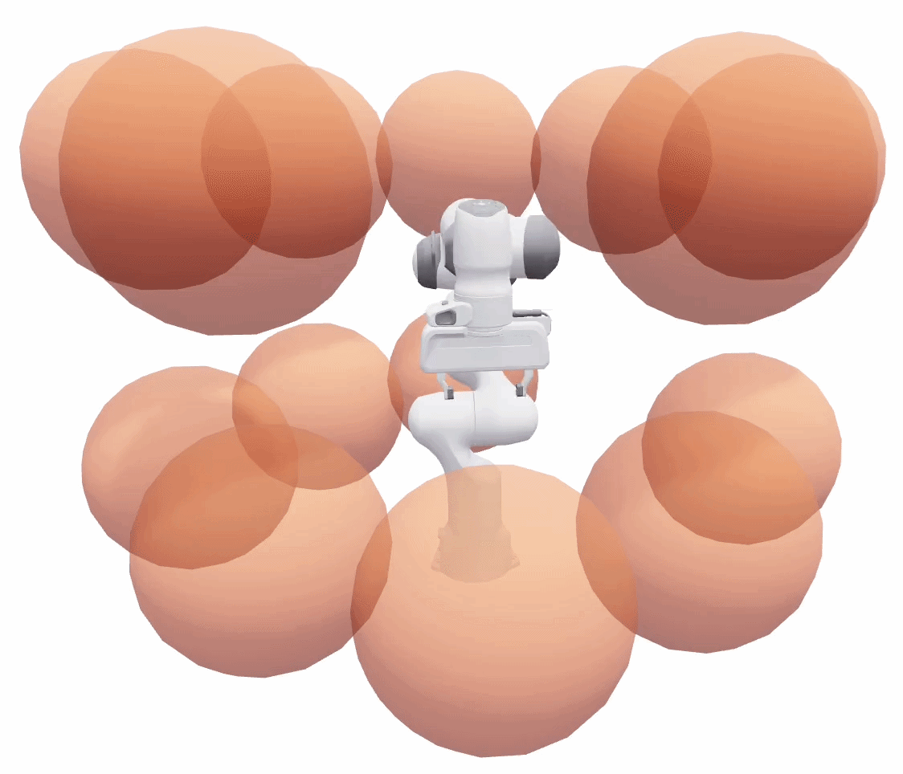

Table of Contents
This tutorial shows how to use VAMP (Vector-Accelerated Motion Planning) with OMPL for robot motion planning. VAMP provides SIMD-accelerated collision checking and forward kinematics, processing multiple robot configurations simultaneously using vectorized instructions. By plugging VAMP into OMPL's planning framework, you get the flexibility of OMPL's planner library with the speed of VAMP's collision checking.
VAMP ships with built-in support for several robots including the Franka Panda, UR5, and Fetch. In this tutorial we will plan for a 7-DOF Panda arm navigating around sphere obstacles. In this tutorial we use the Python bindings for OMPL. There is also a pure C++ version of this demo; see VAMPPlanning.cpp.

The Panda arm inside a cage of 14 sphere obstacles.
Prerequisites
Install the required Python packages:
You will also need the OMPL Python bindings installed. See the installation instructions for details.
Bridging VAMP and OMPL
OMPL is designed to be agnostic to the robot and environment representation. To use VAMP's collision checking with OMPL, we need to implement three bridge classes that translate between OMPL's state representation and VAMP's configuration representation.
State Space
First, we create a state space that uses VAMP's robot module to define the joint limits. This is a simple wrapper around ompl::base::RealVectorStateSpace that reads bounds directly from the VAMP robot:
The robot.dimension() call returns the number of joints (7 for the Panda), and robot.lower_bounds() / robot.upper_bounds() return the joint limits. This is all OMPL needs to sample and interpolate in the configuration space.
State Validity Checker
Next, we implement a state validity checker that delegates to VAMP's robot.validate() function. This checks whether a single configuration is collision-free against the environment:
The key line is self.robot.validate(config, self.env), which uses VAMP's vectorized collision checking to test the configuration against all obstacles in the environment.
Motion Validator
Finally, we implement a motion validator that checks whether an entire straight-line motion between two configurations is collision-free. VAMP provides robot.validate_motion() for this purpose, which internally checks configurations along the path at an appropriate resolution:
Note: By providing a custom ompl::base::MotionValidator, we bypass OMPL's default ompl::base::DiscreteMotionValidator, which would otherwise call isValid() at discrete steps along the motion. VAMP's validate_motion() handles the entire edge check internally in a single call.
These three classes are provided in the vamp_state_space.py module included with the demo.
Setting Up the Planning Problem
With the bridge classes in place, we can set up a complete planning problem. We will plan for a Panda arm navigating through a cage of sphere obstacles.
Creating the Environment
First, define the obstacle environment. VAMP represents obstacles as geometric primitives (spheres, boxes, cylinders). Here we create a cage of 14 spheres:
Configuring OMPL
Now we wire everything together using OMPL's ompl::geometric::SimpleSetup:
Setting Start and Goal States
Define start and goal configurations as joint angles for the 7-DOF Panda arm:
Solving
With everything configured, solving is a single call:
The planner will typically find a solution in milliseconds thanks to VAMP's fast collision checking.
Benchmarking Planners
OMPL's ompl::tools::Benchmark class makes it easy to compare multiple planners on the same problem. Here we benchmark RRTConnect, RRT, KPIECE1, and LBKPIECE1:
The log file can be visualized with Planner Arena (see the benchmarking tutorial for details). You can also convert it to a SQLite database for custom analysis:
Running the Demo
The complete demo script supports both single planning and benchmarking via command-line flags:
Extending to Other Robots
VAMP supports several robots out of the box. To plan for a different robot, simply change the robot module:
The VampStateSpace, VampStateValidityChecker, and VampMotionValidator classes work with any VAMP robot module, since they read the dimension and bounds from the robot object.
For a more comprehensive example that loads problems from the MotionBenchMaker dataset and supports multiple robots, see the motion_benchmaker_demo.py script in the demos directory.